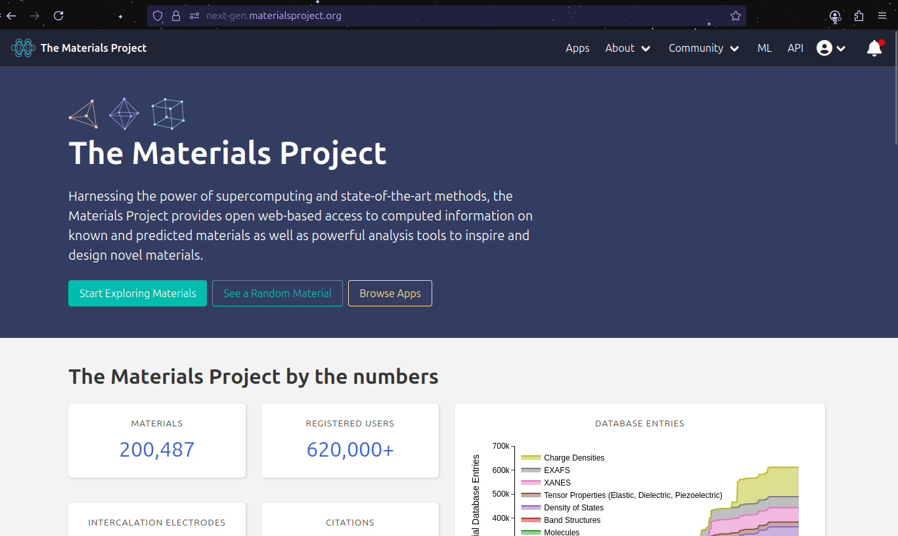
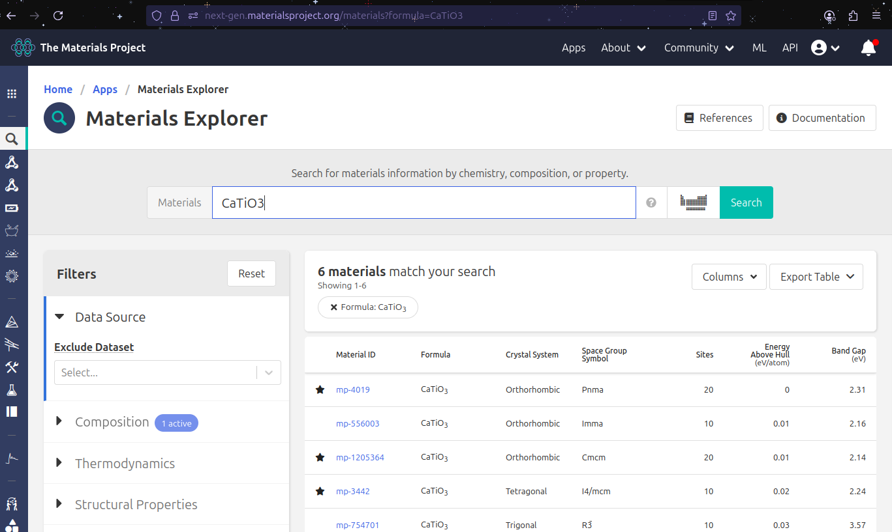
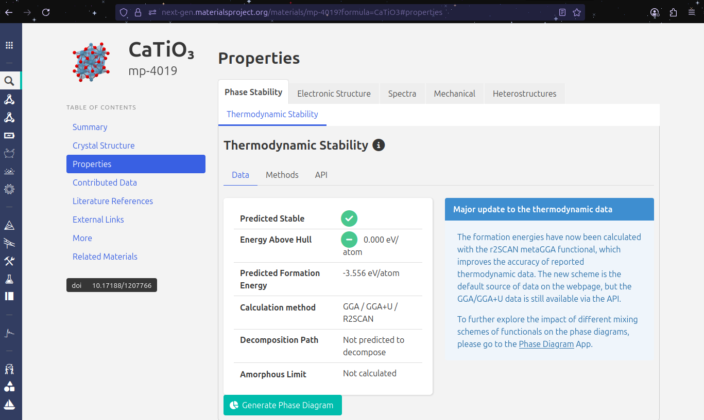
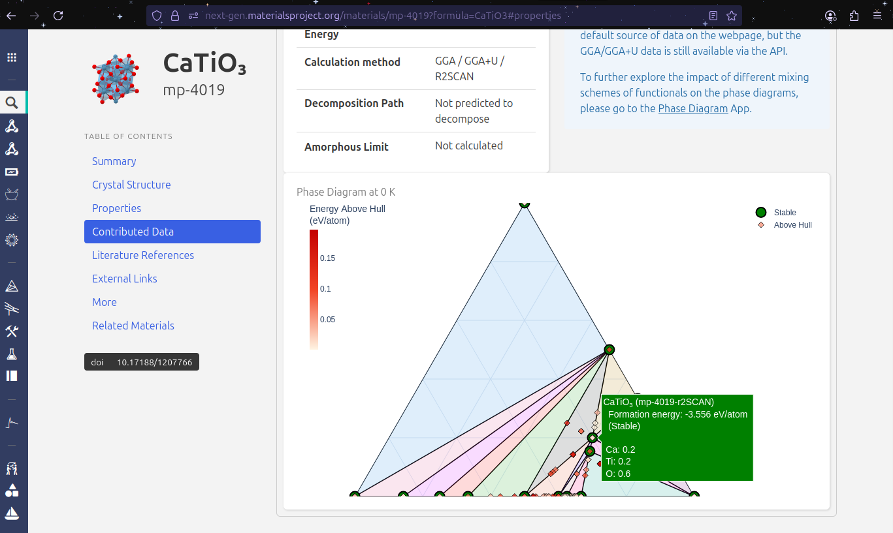

Meeting Materials Project#
Before writing any code, it’s important to understand the data source that powers much of modern computational materials research. The Materials Project is one of the largest open databases of computed materials properties. It provides access to information such as crystal structures, formation energies, band gaps, and more — all freely available to the research community.
In this section, we will explore the Materials Project website directly. By navigating the interface, visualizing material structures, and downloading data, you will gain a practical sense of what the database contains and how it can be used in your own work. Think of this as getting to know the “library” before learning how to query it programmatically.
Step 1 - Register or Log In#
To obtain the structures of the materials we want to study, we will use the Materials Project, a comprehensive open-access database for computational materials science.
Before accessing data through code, we will first explore it manually to better understand its interface and capabilities.
Open the Materials Project in your browser.
Click on the green “Login or Register” button at the top right of the page.
If you already have an account, sign in with your credentials. Otherwise, create a new account by following the instructions provided on the website
Tip
registering is required if you plan to use the API later in this tutorial to query data directly from Python
Step 2 - Exploring Materials#
Once logged in, click the “Start Exploring Materials” button on the homepage.
You will be redirected to the exploration interface, which consists of:
A search bar where you can directly enter a material’s chemical formula or composition.
An interactive periodic table where you can select elements and explore all possible compounds containing them.
For this example, we will search for \(\text{CaTiO}_3\):
Type
CaTiO3in the search bar and hit Enter.A list of results matching your query will appear.
On the left side, you will notice filtering options (e.g, by symmetry, space group, bandgap).
Important
Pause and explore: take a moment to play with the filters. This is a powerful feature to narrow down results for specific applications.
For now, click on the first entry under the “Material ID” columna, labeled mp-4019.
Step 3 - Dowloading the Structure#
Once you are on the material’s detail page, you will see a visualization of the structure alongside a computed properties.
To download the crystallographic information file (.cif):
Locate the visualization box at the top of the page.
Click the last icon on the top-right of that box – it is highlighted in blue in the figure below.
Save the
.ciffile somewhere convenient. We will use it later when we start coding.
Step 4 - Exploring Materials Properites#
One of the most valuable features of Materials Project is the computed properties available for each material. In the left-hand Table of Contents menu, you will find categories such as:
Summary
Crystal Structure
Properties
Contributed Data
Literature References
External Links
More
Related Materials.
We will focus on the properties section.
4.1 Phase Diagram#
Navigate to Properties -> Generate Phase Diagram and click the Generate button. After a moment, you will see an interactive phase diagram.
Note
Interpretation
Stable phases are highlighted in green.
Unstable plases appear as red diamonds.
The stable compounds tend to cluster at the bottom, between titanium and oxygen, meaning these elements often form stable oxides.
Notice that there are no stable compounds formed solely by titanium and calcium.
Our material, \(\text{CaTiO}_3\) is identified as stable.
4.2 Formation energy#
The formation energy tells us how thermodynamically favorable it is for a compound to form.
Lower formation energy \(\rightarrow\) more stable compoudn.
In this example, stable phases typically have formation energies around \(-3\text{eV}\).
Unstable phases (red diamonds) have higher formation energies, often greater that \(-2 \text{eV}\).
This relationship is visible directly in the phase diagram.
4.3 Electronic Structure: Band Gap and DOS#
Now click on Electronic Structure in the left menu. You will find two key plots:
Band Structure: Shows the valence band (bottom) and the conduction band (top). The band gap is the energy region between them where no electronic states exist.
For \(\text{CaTiO}3\), the band gap is approximately \(2.31 \text{eV}\), meaning it behaves as a semiconductor.
Density of stated (DOS): Reveals how electronic states are distributed among elements and orbitals.
Here we observe that:
Oxygen contributes maintly to the valence band.
Calcium and titanium dominate the conduction band.
Note
Reflection
This separation between valence and conduction contributions is a commmon trend: anions (like oxygen) dominate the valence band and cations (like calcium and titanium) dominate the conduction band.
Step 5 - Key Takeaways#
Materials Project offers a huge database of computed material properties.
We learned how to:
Search for a material
Download its
.cifstructure.Analyze phase stability, formation energies, and electronic properties.
Understanding the website’s interface will make it easier to use its API later for automated data mining.
Next Steps#
In the following notebook, we’ll move from manual exploration to coding — using Python visualize the structure downloaded from Materials Project in this tutorial.